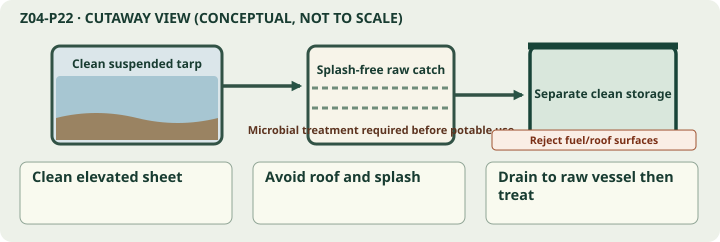

Z04-P22 · Water · Adapted historical material
Select safe food-contact surfaces for rain catchment
Minimize chemical leaching and debris pickup when setting up a clean temporary rain-catchment sheet.
When it applies · Emergency or backcountry rain collection where lawful and no confirmed potable source is reachable.
Equipment · Clean food-contact tarp or sheet with known prior use, clean cordage and dedicated raw-water collection vessel.

Actions
- Choose a clean, uncoated or food-contact catchment material with known history; reject tarps stained with fuel, pesticides, antifreeze or heavy mold.[W03, W01, W30]
- Suspend the catchment above ground splash and clear of overhanging branches, bird perches and roof eaves that shed droppings or chemical residues.[W03, W30]
- Direct the lowest corner into a covered raw-water vessel and keep all catchment parts strictly separate from finished drinking containers.[W03, W06, W30]
Failure recognition · Catching rain off a painted vehicle hood, asphalt roof or dirty groundsheet and drinking it untreated.[W03, W01, W30]
Verify · Confirm the catchment surface is clean, elevated from splash and drains exclusively into a clearly marked raw container.[W30, W06, ED]
Stop or change course · Reject collected rain if chemical residue, fuel odor or heavy bird-dropping contamination is present; treat all acceptable rain before drinking.[W01, W03, W30]
Evidence and editorial notes
- W01 · CDC · How to Make Water Safe in an Emergency (2024-09-19)
- Section: Water with fuel or toxic chemicals in it · Conditions: Suspected fuel, toxic chemicals or radioactive contamination
Support: Use a different safe supply. Standard boiling and microbial disinfection do not make this water safe.
Limitations: Does not list contaminant-specific lab remediation; applies to emergency consumer decisions only. · Conflicting evidence: None across CDC/EPA emergency guidance.
Editorial note: Used as upstream hard-stop gate prior to any field treatment card. · Specialist reviewer: Drinking-water safety and public health
Primary source · checked 2026-11-24 - W03 · CDC · Collecting Rainwater and Your Health (current web edition)
- Section: Rainwater might not be safe for household use · Conditions: Collected rain, including apparently clean runoff
Support: Germs and chemicals can enter from air, roof, gutters or storage. Prefer safe drinking water for ingestion.
Limitations: Site-specific roof and atmospheric chemistry vary; no universal roof-wash formula assumed. · Conflicting evidence: None; aligns with CDC potable-first hierarchy.
Editorial note: Separates catchment from raw storage and microbial treatment. · Specialist reviewer: Drinking-water safety and environmental health
Primary source · checked 2026-11-24 - W06 · CDC · How to Create an Emergency Water Supply (current web edition)
- Section: How to store emergency water; Safe storage containers · Conditions: Potable water intended for emergency storage
Support: Prefer sealed commercial water or clean food-grade tight-closing containers. Avoid containers that held toxic chemicals.
Limitations: Container shelf durability and rotation depend on plastic/material type and storage heat. · Conflicting evidence: None; reinforces strict raw-vs-clean segregation.
Editorial note: Used to enforce labeling and dedicated raw/potable vessel separation. · Specialist reviewer: Drinking-water safety and public health
Primary source · checked 2026-11-24 - W30 · CDC · Collecting Rainwater and Your Health (current web edition)
- Section: Collecting Rainwater > First-Flush, Debris, and Storage Hygiene · Conditions: Improvised or dedicated rainwater catchment systems
Support: Bird droppings, windblown dust, leaf tannins, and surface coatings enter initial runoff; isolate collection surfaces, screen coarse debris on the raw side, and treat before drinking.
Limitations: Even screened rain catchment remains raw water until validated microbial treatment is applied. · Conflicting evidence: None; prevents treating screened rain as potable.
Editorial note: Supports catchment geometry, leaf/branch runoff limits, and first-flush separation. · Specialist reviewer: Drinking-water safety and environmental health
Primary source · checked 2026-11-24
Source lineage · B003 rain catchment and CDC rainwater guidance; new manuscript · Classification · Adapted historical material.